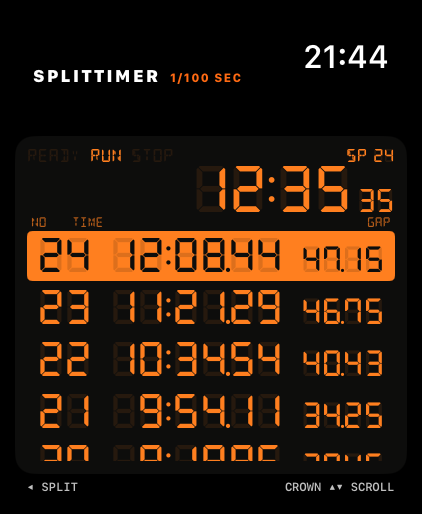

SPLITTIMER1/100 SEC
Time a whole group with one start.
Start once. Every tap, or every press of the Action Button on Apple Watch Ultra, records the total time since the start as a numbered split. Ten runners finish? Ten presses. No names, no iPhone needed.



How it works
Apple Watch Ultra
Settings › Action Button › Workout › SplitTimer › Group Timer. The first press starts, every next press is a split. Action Button + side button stops and resumes.
Settings › Action Button › Workout › SplitTimer › Group Timer. The first press starts, every next press is a split. Action Button + side button stops and resumes.
Every Apple Watch
Tap anywhere on the display for a split. Double tap works on Series 9 and later and Ultra 2 and later. Hold one second to stop.
Tap anywhere on the display for a split. Double tap works on Series 9 and later and Ultra 2 and later. Hold one second to stop.
After the race
See first, last and spread, scroll every split with the Digital Crown, and export the session as CSV.
See first, last and spread, scroll every split with the Digital Crown, and export the session as CSV.
Support
- The Action Button doesn't start SplitTimer.
- Open SplitTimer once and allow the Health permission (workouts). Without it, watchOS won't hand the Action Button to the app. Check Settings › Health › Apps › SplitTimer.
- Why does SplitTimer start a workout?
- On Apple Watch Ultra, apps can only use the Action Button through a workout. The workout keeps the clock on screen. Nothing is saved to Health unless you turn on "Save as workout in Health" in the app's settings.
- Can I resume after stopping by accident?
- Yes: press Action Button + side button again, or hold the display and choose "Keep counting". The stopped time is left out, like a regular stopwatch.
- Where are my sessions?
- On your watch only. Swipe left twice for the history; tap a session to export it as CSV.
- Contact
- Questions or ideas: barthak32@gmail.com. I read every message.
Private by design
No account, no server, no tracking. Your sessions stay on your watch. Privacy policy